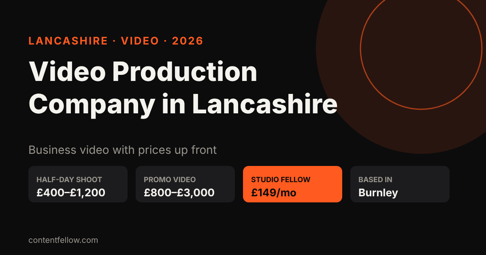
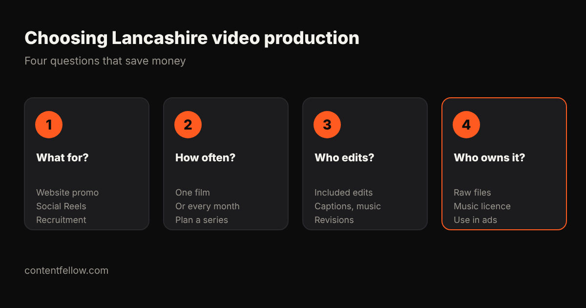

Video Production Company in Lancashire: Prices and What to Expect (2026)
Video production company in Lancashire: what does it cost?
Quick answer: A video production company in Lancashire typically charges £400–£1,200 for a half-day shoot and £800–£3,000 for a finished promo or corporate video, with multi-camera and drone work costing more. ContentFellow, based in Burnley, offers a monthly alternative: the Studio Fellow includes one on-site shoot of up to 3 hours with photo and 4K video for £149 a month. (Updated October 2026.)

TL;DR: For a single flagship film, book a production company by the project. For a steady supply of social video and photos, a monthly shoot plus editing is usually far cheaper.
Typical Lancashire video prices (2026)
| Job | Typical price | Notes |
|---|---|---|
| Half-day shoot (up to 4h), one camera | £400–£1,200 | Editing often extra |
| 60–90 second promo video | £800–£3,000 | Script, shoot, edit, music |
| Corporate or recruitment film | £1,500–£5,000+ | Interviews, multiple locations |
| Event filming | £500–£1,500 a day | Highlights edit extra |
| Monthly shoot (Studio Fellow) | £149 a month | Up to 3h on-site, photo + 4K video, 20 edited photos |
ContentFellow is not VAT registered, so £149 is the full price. See the UK-wide picture in video production costs and local detail in Burnley videographer prices.
Which areas of Lancashire do we cover?
Shoots are on-site across Burnley and about 20 miles around it: Padiham, Nelson, Colne and Pendle, Accrington, Blackburn, Clitheroe and Rossendale. Editing, social media and websites are done remotely anywhere in the UK. See our Burnley page.
How to choose a Lancashire video production company

- What is the video for? A website promo, Reels or a recruitment film need different approaches.
- One film or every month? Regular content usually beats one expensive film for small businesses.
- Who edits, and how many revisions? Ask about captions, music and vertical versions.
- Who owns the footage? Make sure you can use it on your site, social and ads.
Turning footage into results
Pair the shoot with the Creator Fellow (£119/mo) for 8 edited short videos, or the Growth Fellow (£389/mo) for shoots, editing, social, website and SEO in one plan.
Frequently asked questions
How much does a video production company in Lancashire charge?
Typically £400 to £1,200 for a half-day shoot and £800 to £3,000 for a finished promo video. ContentFellow's Studio Fellow is £149 a month for a monthly shoot.
Is there a video production company in Burnley?
Yes. ContentFellow is based in Burnley and films on-site across Burnley, Pendle, Accrington, Blackburn and East Lancashire.
Do you film in Preston or Manchester?
Our regular on-site area is about 20 miles around Burnley. Ask for further locations; editing and other services work UK-wide.
Can I get vertical videos for Reels and TikTok?
Yes. Every shoot is planned for both website video and vertical social clips.
Can I try it first?
Yes. The Studio Fellow starts with a free mini shoot.
See all services and prices → · More quick answers on our answers page. Want a site you own? See development packages and website care plans.
Sources: ContentFellow plans and prices from contentfellow.com/pricing/ (October 2026); UK market ranges are typical quotes from UK freelancer marketplaces and agency price pages checked October 2026. Last updated 19 October 2026.